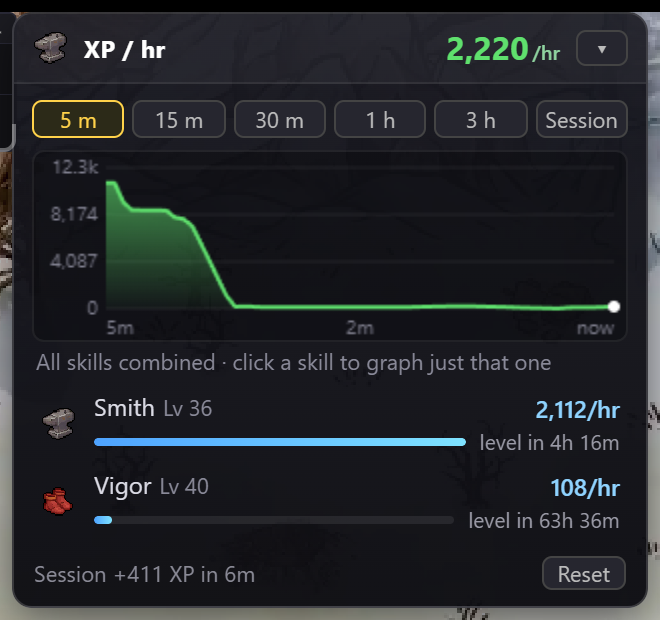
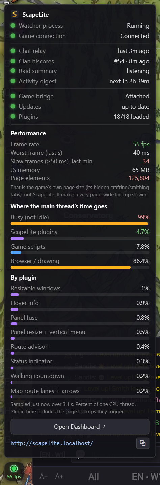
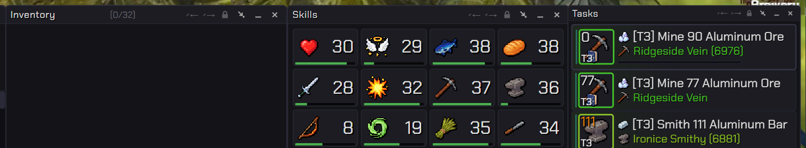
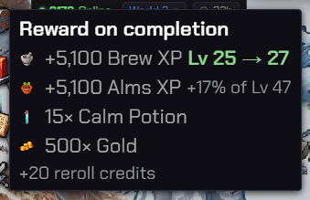
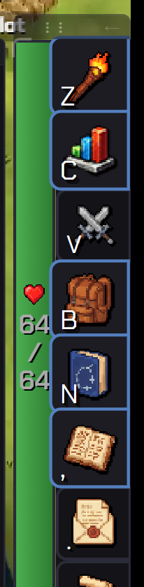

Panels, your way
Resize any panel from a corner grip, lock it in place, snap panels together so they move as one, and move or resize the bottom-right menu and HP bar.
Free · community made · display only
ScapeLite adds optional plugins to the game: resizable and fusable panels, a smarter task route planner, a live XP/hr graph, richer tooltips, Discord updates and more. Pick only what you want from a built-in plugin marketplace.
Windows · works with the Steam version · never clicks or plays for you
Resize any panel from a corner grip, lock it in place, snap panels together so they move as one, and move or resize the bottom-right menu and HP bar.
Finds a faster order for your task queue, with and without teleport crystals, and shows the route on a map. It remembers whether you play with teleports.
A live graph of XP per hour over 5 minutes to 3 hours, per-skill icons, and an ETA to your next level.
XP, gold, slay and quest rewards at a glance, with skill icons and how much of a level a reward covers.
Invites and popups can never be hidden behind a panel, and you can move them where you like.
A pulsing status light with live FPS and a breakdown of where the time goes, so you can see if the game or a plugin is slow.
The essentials that come with ScapeLite, all real screenshots from the game.





ScapeLite starts small. Add only what you want from the built-in marketplace; changes apply instantly, no restart. Anyone can write a plugin.
Loading plugins…
Download the installer from the latest release on GitHub. The version history is on the same page.
Download for WindowsWindows may show an “unknown publisher” warning because the installer is not code-signed yet: choose More info, then Run anyway. Requires the Steam version of Scapewatch. ScapeLite checks for updates on launch and from Settings → Plugins → About.
Developers can also run it from source: see the project documentation.
ScapeLite is display-only: it changes how the game looks and tells you things, but it never clicks, selects or plays for you. It also reads nothing outside the game window. It is community made and is not affiliated with, or endorsed by, the Scapewatch developers.
No. Everything runs on your PC. The only network traffic is what you configure yourself (for example a Discord webhook) and the update check.
Sometimes a game update changes something a plugin relies on. Updates are checked on launch, and a broken plugin can be switched off in one click without affecting the rest.
Yes. A plugin is a folder with a small manifest and a script; it then shows up in the marketplace. Guidelines: display-only, clean up after yourself.
The ScapeLite tag marks plugins made by the ScapeLite team. It does not mean they are made by Scapewatch.
Sent, at most once a day, to GoatCounter (a free, privacy-friendly counter): the page /active, the ScapeLite version and, as with every web request, your IP address and browser/OS name (GoatCounter does not store the IP, it only uses it to count unique visitors). Never sent: your name, character, account, game progress or data, settings, plugin list, webhooks, or anything you do. No cookies, no ID is saved. It is on by default, you can switch it off in the first-launch setup or any time in Settings → Plugins → ScapeLite Core.
Use the bug icon in the status light’s hover menu (bottom-left of the game) or open an issue on GitHub. Bugs in ScapeLite’s Official plugins are fixed by the team; community plugins are supported by their own authors.